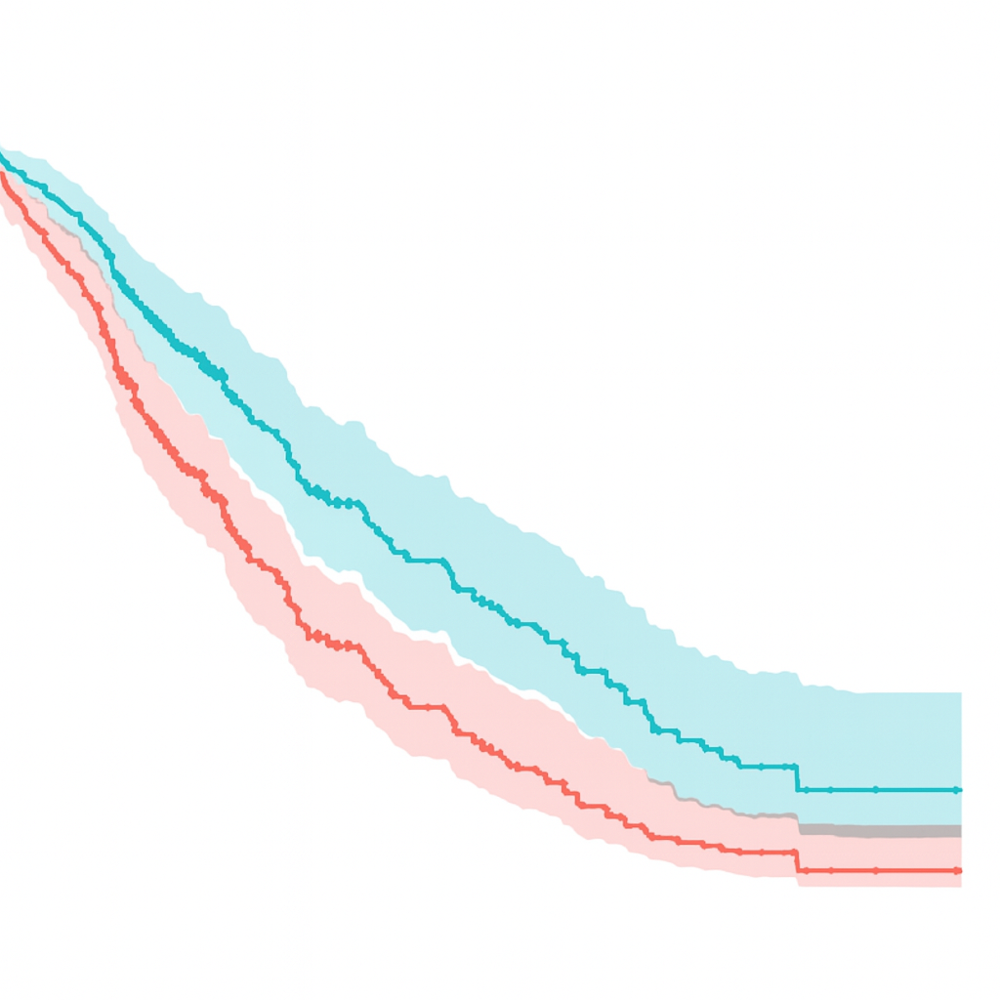

Code
# Install lifelines if not already installed
!pip install lifelinesIn clinical research, it is valuabel to be able to model and predict whether a patient will experience a specified event (e.g. death, the return of a disease like cancer, etc,). Just as important is being able to model and predict when such an event occurs (e.g. 3 years after the diagnosis of a cancer at particular stage). This is the essence of survival analysis: the use of statistical models focused on time-to-event data. One of the most common and powerful tools in survival analysis is the Cox Proportional Hazards Model (Cox model for short), which helps us understand how different factors (age, treatment, comorbidities, etc.) influence a given individual’s changing moment-to-moment risk of a given event over time.
For the last several months, I have had the privilege of working on a clinical research team at Massachusetts General Hospital. As I have reviewed scientific literature regarding lung cancer and surgical pproaches to treating it, I have seen firsthand how often prevelent this model is in medical/clinical research. This post offers a brief introduction to the Cox model and a simple, hands-on demo using Python.
At the core of the Cox model is the hazard function. A hazard function, \(\lambda (t)\), is one that indicates the instantaneous rate of an event occurring (e.g. death) at a specific time, \(t\). The baseline hazard function \(\lambda_0 (t)\) refers to the hazard function when explanatory variables (i.e. covariates), \(X\), are at their baseline levels (e.g. when no treatment/medication is given, when a particular comorbidity is not present, etc.). That is, \(X_i = 0\) for all \(i \in \{1, 2, ..., n \}\) for \(n\) covariates. The effect of each covariate is denoted as \(\beta\) with \(\beta_i\) denoting the effect of the \(i\)-th covariate. The overall hazard function, \(\lambda(t \mid X)\), is as follows:
\[ \lambda(t \mid X) = \lambda_0 (t) e^{\displaystyle \beta_1 X_1 + \beta_2 X_2 + \cdots + \beta_n X_n} \]
where \(X =\) \((X_1, X_2, ..., X_n)\) is the covariate vector. Note that if \(\beta_i > 0\), then increasing \(X_i\) (or \(X_i = 1\) if binary) means an increased risk, and if \(\beta_i < 0\), then increasing \(X_i\) (or \(X_i = 1\) if binary) means a decreased risk. In the case of a single covariate, \(\beta_1\), it can be shown that
\[ \frac{\lambda(t \mid x + 1)}{\lambda(t \mid x)} = e^{\displaystyle \beta_1} \]
When comparing two patients, \(a\) and \(b\), in the single covariate case, it can also be shown that
\[ \frac{\lambda(t \mid X_a)}{\lambda(t \mid X_b)} = e^{\displaystyle \beta_1(X_a - X_b)} \]
The right-handside of these equations are constants independent of time, \(t\). These constant proportions are the reason why the model is called the Cox Proportional Hazards model. The derivation of these results and deeper mathematical theory and background behind the model is beyond the scope of this blog.

Now, I’ll present a simple example (using the lifelines Python library, [link to documentation]https://lifelines.readthedocs.io/en/latest/) of how to fit and interpret a Cox model on a small synthetic dataset.
/Users/cromacair/Desktop/STAT 386/Labs/Tutorial Blog/carsonordynaSTAT386.github.io/.venv/bin/python3# Import librarys
import pandas as pd
from lifelines import CoxPHFitter
# Sample dataset
data = pd.DataFrame({
'age': [60, 50, 45, 70, 65],
'treatment': [1, 0, 1, 0, 1],
'duration': [5, 6, 6, 2, 4],
'event': [1, 0, 1, 1, 0]
})
# Fit the Cox model
cph = CoxPHFitter()
cph.fit(data, duration_col='duration', event_col='event')
# Examine the results
cph.print_summary()/Users/cromacair/Desktop/STAT 386/Labs/Tutorial Blog/carsonordynaSTAT386.github.io/.venv/lib/python3.11/site-packages/lifelines/utils/__init__.py:1163: ConvergenceWarning: Column age has high sample correlation with the duration column. This may harm convergence. This could be a form of 'complete separation'. See https://stats.stackexchange.com/questions/11109/how-to-deal-with-perfect-separation-in-logistic-regression
warnings.warn(dedent(warning_text), ConvergenceWarning)
/Users/cromacair/Desktop/STAT 386/Labs/Tutorial Blog/carsonordynaSTAT386.github.io/.venv/lib/python3.11/site-packages/lifelines/fitters/coxph_fitter.py:1607: ConvergenceWarning: Newton-Raphson convergence completed successfully but norm(delta) is still high, 2.145. This may imply non-unique solutions to the maximum likelihood. Perhaps there is collinearity or complete separation in the dataset?
warnings.warn(| model | lifelines.CoxPHFitter |
|---|---|
| duration col | 'duration' |
| event col | 'event' |
| baseline estimation | breslow |
| number of observations | 5 |
| number of events observed | 3 |
| partial log-likelihood | -1.39 |
| time fit was run | 2025-09-30 02:29:56 UTC |
| coef | exp(coef) | se(coef) | coef lower 95% | coef upper 95% | exp(coef) lower 95% | exp(coef) upper 95% | cmp to | z | p | -log2(p) | |
|---|---|---|---|---|---|---|---|---|---|---|---|
| age | 3.00 | 20.10 | 512.01 | -1000.53 | 1006.53 | 0.00 | inf | 0.00 | 0.01 | 1.00 | 0.01 |
| treatment | 15.00 | 3.28e+06 | 2560.07 | -5002.65 | 5032.65 | 0.00 | inf | 0.00 | 0.01 | 1.00 | 0.01 |
| Concordance | 0.93 |
|---|---|
| Partial AIC | 6.77 |
| log-likelihood ratio test | 4.03 on 2 df |
| -log2(p) of ll-ratio test | 2.91 |
Hooray!
---
title: "Tutorial Blog"
format: html
jupyter: python3
---
# The Cox Proportional Hazards Model: A Brief Introduction and Demo
### Introduction
In clinical research, it is valuabel to be able to model and predict whether a patient will experience a specified event (e.g. death, the return of a disease like cancer, etc,). Just as important is being able to model and predict ***when*** such an event occurs (e.g. 3 years after the diagnosis of a cancer at particular stage). This is the essence of survival analysis: the use of statistical models focused on time-to-event data. One of the most common and powerful tools in survival analysis is the Cox Proportional Hazards Model (Cox model for short), which helps us understand how different factors (age, treatment, comorbidities, etc.) influence a given individual's changing moment-to-moment risk of a given event over time.
For the last several months, I have had the privilege of working on a clinical research team at Massachusetts General Hospital. As I have reviewed scientific literature regarding lung cancer and surgical pproaches to treating it, I have seen firsthand how often prevelent this model is in medical/clinical research. This post offers a brief introduction to the Cox model and a simple, hands-on demo using Python.
### The Model
At the core of the Cox model is the hazard function. A hazard function, $\lambda (t)$, is one that indicates the instantaneous rate of an event occurring (e.g. death) at a specific time, $t$. The baseline hazard function $\lambda_0 (t)$ refers to the hazard function when explanatory variables (i.e. covariates), $X$, are at their baseline levels (e.g. when no treatment/medication is given, when a particular comorbidity is not present, etc.). That is, $X_i = 0$ for all $i \in \{1, 2, ..., n \}$ for $n$ covariates. The effect of each covariate is denoted as $\beta$ with $\beta_i$ denoting the effect of the $i$-th covariate. The overall hazard function, $\lambda(t \mid X)$, is as follows:
$$
\lambda(t \mid X) = \lambda_0 (t) e^{\displaystyle \beta_1 X_1 + \beta_2 X_2 + \cdots + \beta_n X_n}
$$
where $X =$ $(X_1, X_2, ..., X_n)$ is the covariate vector. Note that if $\beta_i > 0$, then increasing $X_i$ (or $X_i = 1$ if binary) means an increased risk, and if $\beta_i < 0$, then increasing $X_i$ (or $X_i = 1$ if binary) means a decreased risk. In the case of a single covariate, $\beta_1$, it can be shown that
$$
\frac{\lambda(t \mid x + 1)}{\lambda(t \mid x)} = e^{\displaystyle \beta_1}
$$
When comparing two patients, $a$ and $b$, in the single covariate case, it can also be shown that
$$
\frac{\lambda(t \mid X_a)}{\lambda(t \mid X_b)} = e^{\displaystyle \beta_1(X_a - X_b)}
$$
The right-handside of these equations are constants independent of time, $t$. These ***constant*** proportions are the reason why the model is called the Cox ***Proportional Hazards*** model. The derivation of these results and deeper mathematical theory and background behind the model is beyond the scope of this blog.

### Demo
Now, I'll present a simple example (using the `lifelines` Python library, [link to documentation]https://lifelines.readthedocs.io/en/latest/) of how to fit and interpret a Cox model on a small synthetic dataset.
```{python}
#| eval: false
# Install lifelines if not already installed
!pip install lifelines
```
```{python}
#| echo: false
#!pip install lifelines
```
```{python}
import sys
print(sys.executable)
```
```{python}
# Import librarys
import pandas as pd
from lifelines import CoxPHFitter
# Sample dataset
data = pd.DataFrame({
'age': [60, 50, 45, 70, 65],
'treatment': [1, 0, 1, 0, 1],
'duration': [5, 6, 6, 2, 4],
'event': [1, 0, 1, 1, 0]
})
# Fit the Cox model
cph = CoxPHFitter()
cph.fit(data, duration_col='duration', event_col='event')
# Examine the results
cph.print_summary()
```
Hooray!
### Conclusion
The Cox Proportional Hazards Model is a powerful tool for analyzing time-to-event data, especially in healthcare and clinical research. It allows us to quantify how different factors influence the timing of critical events.
Your next step: Find a dataset of interest—perhaps from Kaggle’s medical datasets—and try fitting a Cox model using lifelines. Interpret the hazard ratios and share your findings in a GitHub repo or blog post. Let’s build a community of reproducible, insightful survival analysis!